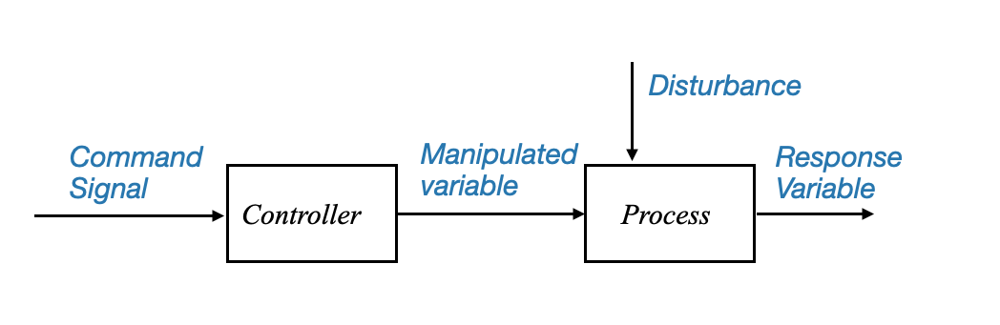
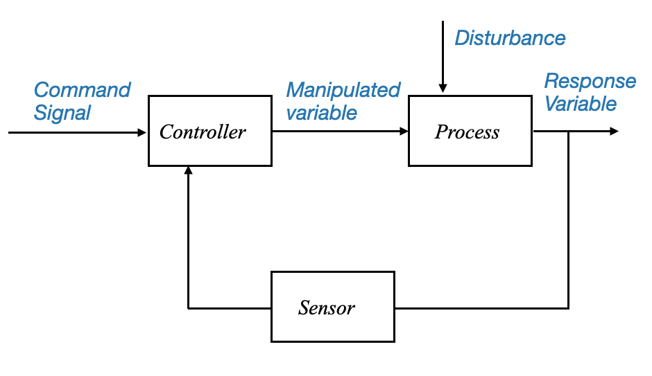
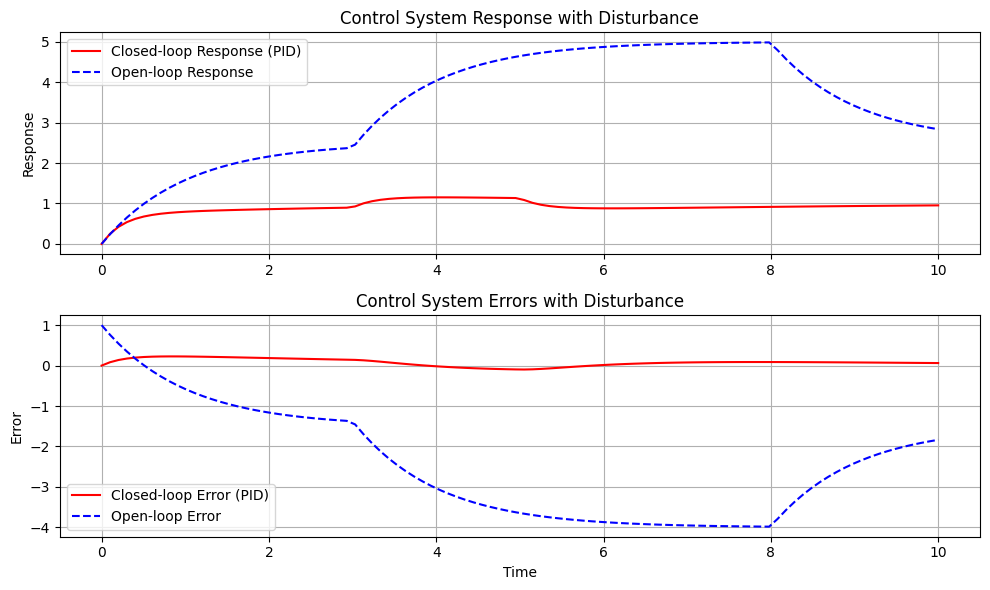

import numpy as np
import matplotlib.pyplot as plt
from scipy.integrate import odeintPrinciples of Automatic Control
Welcome to the course on Principles of Automatic Control. In this series of interactive Jupyter notebooks, we’ll discuss the fundamental principles, concepts, and terminologies used in the field of control engineering.
Introduction to Control Systems
Control engineering or control systems engineering deals with designing systems to behave in a desired manner. Today, control systems are integral to our daily lives, and they have a vast range of applications.
Control System Terminology
In our initial discussions, we’ll focus on the terminologies used in control systems. It’s crucial to get acquainted with these terms to have a clear understanding of the subsequent topics.
Let’s begin!
The Role of Control Systems in Modern Technology
Control systems play a key role in the development of modern civilization and technology. Examples abound in daily life:
- Domestic Appliances: Home heating systems, refrigerators, air conditioners, automobiles.
- Industrial Applications: Inventory control, automatic assembly lines, machine tool control.
- Advanced Technology: Space technology, weapon systems, robotics, power plants.
These systems ensure efficient, reliable, and safe operations in various sectors.

|
|

|

|
Feedback control theory, which we will be focusing on in this course, is also utilized in inventory control and socio-economic systems.
While our primary focus will be on engineering systems, where the system to be controlled obeys specific physical laws.
It’s essential to note that control system can be also applied to socio-economic and biological systems (cybernetics), but we will not discuss them in this course.
Historical Context and Evolution
The application of control techniques began primarily in process control during the early 20th century (1900-1940). The Second World War accelerated the development of control systems with the advent of automatic airplane pilots, gun positioning systems, radar, and antenna control systems.
This period marked the birth of servomechanisms, derived from “servo” (meaning slave or servant) and “mechanism”, indicating a system responding to commands. This convergence of disciplines led to the unified feedback control theory we study today.
Basic Control System Terminologies
Before we move forward, let’s define some of the basic terminologies used in control systems:
1. The Process or Plant or Controlled System
- Definition: The system that is being controlled. It can be any system, machine, or process that needs automated control.
- Examples in Industries: Chemical, petroleum, steam power, etc., where control of temperature, pressure, liquid level, humidity, and composition is required. These applications are often referred to as “process control applications.”
2. Response or Controlled Variable
- Definition: The output or the variable of the process we aim to control.
- Example: Temperature in a heating system.
3. Manipulated Variable
- Definition: The variable adjusted by the controller to influence the response variable.
- Example: The valve position in a heating system to regulate heat flow.
4. Controller
- Role: To adjust the manipulated variable to ensure the controlled variable follows the set commands.
5. Disturbance
- Characteristics: An unwanted, uncontrollable, often random signal that affects the process. This signal is beyond our control.
- Sources: External environmental factors or internal process changes.
- Example: Ambient temperature fluctuations affecting a heating system (external); Parameter changes with time (internal)
Block Diagram Representation
To understand how a basic control system operates, it’s beneficial to use a block diagram representation.
|
 |
or we can also see the command signal as coming to a single block, which produces the response variable:
 |
Figure: Block diagram representing the basic control system structure and it main components and signals.
Note that although the disturbance is visualised as a signal coming from outside, it might be an internal change (e.g., parameter change).
This latter block diagram shows the our objective is to have a response variable that follows the set commands. Let’s now see how we can achieve this objective.
Open-Loop Control System
- Structure: The controller receives the command signal and adjusts the manipulated variable accordingly, regardless of any disturbances.
- Limitation: Lack of feedback; the system does not adapt to disturbances or changes in the process.
However, such a system can be vulnerable to disturbances. If a random disturbance affects the system, and the controller isn’t aware of this change, it may fail to make the response variable follow the command.
Closed-Loop Control System
To tackle this, a more intelligent system, known as the “closed-loop control” system, is utilized. Here, the controller receives feedback from the response variable, allowing it to adjust the manipulated variable in real-time and ensuring the output closely follows the command, even when disturbances occur.
The Intelligence of Closed-Loop Systems
The closed-loop system continuously monitors the process it controls and makes real-time adjustments to keep things running smoothly. Here’s how it works:
- Feedback Mechanism: The controller in a closed-loop system is constantly informed about the current state of the process (the response variable). This continuous stream of feedback is the system’s way of keeping its finger on the pulse.
- Dynamic Adjustment: Based on this feedback, the controller makes immediate adjustments to the manipulated variable – the component of the system that directly influences the output.
Dealing with Disturbances
In an ideal scenario, if we could predict every disturbance, we could pre-emptively adjust our systems to counteract them. But in reality, disturbances are often random and unpredictable. This is where the closed-loop system’s ability to measure and react comes into play:
- When a disturbance affects the process, this impact is reflected in the response variable.
- By measuring this variable, the system indirectly gathers information about the disturbance.
- The controller then compares the actual output (controlled variable) with the intended output (command signal) and identifies any discrepancies.
- This comparison produces an error signal, which the controller uses to generate a corrective control signal. This signal is fed back into the process, reducing the error towards zero.
Feedback control systems are key in various sectors due to their error-minimizing capabilities. They operate on a straightforward yet effective principle: use feedback to reduce the gap between what is desired (the command signal) and what is actually happening (the actual output).
Components of a Closed-Loop Control System
- Sensor: This component measures the controlled variable, effectively taking the system’s temperature.
- Comparator: Acting as a judge, it compares the sensor’s readings with the desired command signal.
- Controller: Based on the comparator’s findings, the controller alters the manipulated variable to correct any errors.
|
 |
Diagram: A block diagram representing the closed-loop control system. The structure illustrates the feedback from the response variable to the controller.
Structure of Feedback Control Systems
The mechanism of a feedback control system is an error self-nulling process.
The system continually checks for discrepancies between the desired command and the actual output, employing controller actions to mitigate these errors. Such a system is commonly known as a closed-loop system due to its looped structure, facilitating the feedback process.
The components of this system can be understood as follows:
- Command Signal: The desired output or set point.
- Controlled Variable: The actual output of the system.
- Error Signal: Difference between the command signal and controlled variable.
- Controller: It processes the error signal to produce the control signal.
- Plant: The actual system being controlled.
- Sensor: Measures the output of the plant
Challenges in Feedback Control System
Despite their effectiveness, closed-loop systems present specific challenges:
Sensor Noise: One of the primary sources of challenges in the feedback control system is the sensor. The inclusion of the sensor, which was absent in open-loop systems, presents its own set of problems:
Noise: The sensor might introduce noise, especially at high frequencies, during measurement. This noise can disrupt the proper functioning of the plant and the controller, thereby reducing the system’s efficiency.
Solutions to Noise: Installing suitable noise filters can address this issue, ensuring that the high-frequency noise does not interfere with the operation of the loop.
Controller Requirements: A significant aspect of the feedback system is its controller.
The controller’s primary aim is to render the system robust. A robust system implies that the controlled variable closely follows the command signal, even in the presence of external disturbances or variations in plant parameters. Achieving this requires a careful balance between system accuracy and stability, a delicate trade-off that forms the core of feedback control theory.
The objective is for the controlled variable to follow the command. This means that the controller in a closed-loop system should achieve:
- Accuracy at Steady State: Minimizing the long-term error between the controlled variable and the command signal.
- Speed of Response: Responding quickly to changes in the command or disturbances.
Stability Concerns (Trade-off Between Accuracy and Stability):
- As we strive for increased system accuracy, stability might get compromised. This trade-off is an inherent challenge of the feedback structure. Feedback control theory and its designs aim to strike a balance between these conflicting requirements.
Feedback Control Advantages
Feedback control systems are indispensable, primarily due to their robust nature. Despite their associated challenges, their ability to filter disturbances and adjust to parameter variations makes them superior to open-loop systems. Without feedback control structures, it would be challenging to achieve system accuracy effectively.
Example
def open_loop_system(y, t, K, tau):
"""Open-loop system model."""
u = 1 # step input
if 3 <= t <= 8: # Adding a disturbance between time 3 and 5
u += 1.0
dydt = (-y + K * u) / tau
return dydt
def closed_loop_system(states, t, K, tau, Ki, Kd):
"""Closed-loop system model with PID control."""
y, e_prev, e_int = states # y is system output, e_prev is previous error, e_int is integral of error
setpoint = 1 # desired setpoint
disturbance = 0
if 3 <= t <= 5: # Adding a disturbance between time 3 and 5
disturbance += 1.0
# Error
e = setpoint - y
# PID Controller
u = K * e + Ki * e_int + Kd * (e - e_prev)
dydt = (-y + u + disturbance) / tau # Disturbance is added directly to the system dynamics
deintdt = e # Integral of error over time
dedt = e - e_prev
return [dydt, dedt, deintdt]
# System parameters
K = 2.5
tau = 1.0
Ki = 1.0 # Integral gain
Kd = 0.5 # Derivative gain
# Time array
t = np.linspace(0, 10, 100)
# Solve ODE for the open-loop system
y_open = odeint(open_loop_system, 0, t, args=(K, tau))
error_open = 1 - y_open.squeeze() # desired setpoint is 1, so error is 1 - output
# Solve ODE for the closed-loop system
initial_conditions = [0, 0, 0] # initial values for y, e_prev, and e_int
y_closed, error_closed, _ = odeint(closed_loop_system, initial_conditions, t, args=(K, tau, Ki, Kd)).T
# Plot Responses
plt.figure(figsize=(10,6))
plt.subplot(2, 1, 1)
plt.plot(t, y_closed, 'r-', label='Closed-loop Response (PID)')
plt.plot(t, y_open, 'b--', label='Open-loop Response')
plt.ylabel('Response')
plt.title('Control System Response with Disturbance')
plt.legend()
plt.grid()
# Plot Errors
plt.subplot(2, 1, 2)
plt.plot(t, error_closed, 'r-', label='Closed-loop Error (PID)')
plt.plot(t, error_open, 'b--', label='Open-loop Error')
plt.xlabel('Time')
plt.ylabel('Error')
plt.title('Control System Errors with Disturbance')
plt.legend()
plt.grid()
plt.tight_layout()
plt.show()
The system we’re simulating is a basic first-order system. It’s one of the simplest dynamical systems used often as a foundational building block in control theory. The equations governing its dynamics, in general, look like:
\[ \tau \frac{dy(t)}{dt} + y(t) = Ku(t) \]
Here: - \(\tau\) is the time constant of the system. It gives an idea of how fast the system responds to changes in the input. - \(K\) is the system gain. It tells you how much the system output changes for a given change in the input. - \(u(t)\) is the system input at time \(t\). - \(y(t)\) is the system output at time \(t\).
The open-loop system directly acts on the system with the input \(u(t)\). There’s no feedback, so if there’s a disturbance or the system isn’t behaving as expected, the open-loop system cannot correct for it.
The closed-loop system, on the other hand, uses feedback. The system output \(y(t)\) is constantly measured and compared to the desired setpoint to determine the error. A controller then adjusts the system input \(u(t)\) based on this error to make the system output match the desired setpoint. This allows the closed-loop system to correct for disturbances and system behavior that deviates from the desired behavior.
In our specific simulation: - The open-loop system was modeled to show how it reacts directly to an input and a disturbance without any feedback mechanism. - The closed-loop system was modeled using a simple proportional controller with a derivative term. The controller tries to minimize the error, which is the difference between the desired output (setpoint + disturbance) and the actual system output. This allows the closed-loop system to correct when there’s a disturbance or other unexpected behavior.
With this feedback mechanism, the controller can dynamically adjust and correct any deviations, ensuring the system remains stable and performs as desired.
Design Approaches for Feedback Control Systems
Designing an effective controller is paramount. There are various approaches to this, and they can be categorized as follows:
- Experimental Approach (Controller Tuning):
- Method: Adjusting the controller based on practical experience and real-time feedback. A controller is installed based on past experiences and then adjusted in real-time until the desired results are achieved.
- Use Case: Commonly used in process control where accurate process models are hard to obtain or very complex (e.g., highly non-linear plants).
- Nature: It’s an ad-hoc approach, relying more on empirical knowledge than theoretical models.
- Model-Based Approach (Analytical Approach):
- Method: Developing a mathematical model of the system (differential equations, transfer functions, state variable models) and designing the controller based on this model.
- Use-case: This is a methods used for complex systems where control requirements are tight, a model-based approach is more suitable. Here, the system’s dynamics are captured in a mathematical model, which is then used to design the controller analytically.
- Advantage: Provides a more precise control, especially for complex systems.
- Knowledge-Based or Data-Based Approach:
- Recent Trends: Includes methods like expert control, fuzzy control, neural networks, and reinforcement learning. The core idea is to utilize qualitative guidelines or rules derived from expert knowledge (either an expdert user or data) to design the controller.
- Application: Becoming increasingly popular in industrial applications.
For the scope of this course, we will primarily focus on the model-based control. This involves deriving a mathematical model of the physical system, which can be based on physical laws or experimentation.
Approach
For a physical system we will obtain a methematical model. This can be derived:
Using Physical Laws: Deriving differential equations based on the physical principles governing the system, which can then be translated into a more convenient representation, e.g., transfer functions or state-space variables.
Performing Experimentation: Conducting experiments to determine input-output relationships and modeling these using suitable mathematical forms, for example, transfer functions. This is called system identification.
Historical Context:
The evolution of control design methods can be broadly categorized into two main eras:
Classical Control Design (1940-1960): This period witnessed the development of frequency domain design methods. Techniques like Nyquist Stability methods, Bode plots, and Root Locus plots emerged. They are still very much in use, especially in industrial control applications (servo mechanism development).
Modern Control Design (1960s onwards): Space vehicle control requirements gave birth to state-space techniques, known as Modern Control Design. While these methods are termed “modern,” it’s crucial to understand that both classical and modern methods are still prevalent and critical in their respective applications.
The term “modern control design” might be a bit misleading. It emerged primarily from the specific requirements of tracking in space vehicles. Yet, in the realm of industrial control, the classical methods of design are still widely prevalent. In fact, about 75% of today’s industrial control problems are addressed using these classical techniques.
While modern methods have their origins and advantages, particularly in specialized applications like space vehicles, it is still debatable which method offers more robustness. Robustness, after all, is the primary requirement for most systems.
This ongoing debate makes it imperative to forgo the terminology of classical and modern control, as both are equally relevant depending on the application.
For the scope of this course, our primary concentration will be on the frequency domain methods of design. This will provide you with a comprehensive understanding of the foundational methods in control design.
However, we won’t neglect the state variable methods altogether. Instead, they’ll be introduced not from a design perspective but rather for system simulation. System simulation, when approached through state variable formulation, can be more intuitive and effective.
Illustrative Examples of Control Systems
It’s often helpful to relate theoretical concepts to real-world examples. This helps in understanding the broader applications and nuances of control systems in everyday life.
Examples of Controlled Systems:
- Bathroom Toilet Tank: A seemingly simple system, but it is, in essence, a feedback control mechanism.
- Automobile Driving: Encompasses various control systems, from speed regulation to power steering.
- Residential Heating: Thermostats and HVAC systems rely on feedback to maintain desired temperatures.
- Hydraulic Steering Mechanism: A critical component for many heavy-duty vehicles and systems.
- Antenna Servo System: Used for tracking and communications.
- Speed Control System: Found in various machines, from industrial setups to home appliances.
We will delve further into these examples, framing them within the context of feedback control systems. By doing so, we aim to provide a deeper understanding of how these principles are applied in practical scenarios.
|
|
|
|
Where does Control System Engineering come into place?
- Attitude control
- Landing control
- Trajectory tracking
- Land control (e.g., antennna tracking)
|
|
|
|
Conclusions
Feedback control systems form the backbone of many modern engineering applications. The ability to provide a mechanism to automatically adjust system behavior based on feedback from outputs makes these systems indispensable. However, the design and implementation of these systems require a comprehensive understanding of their structure, challenges, advantages, and the various approaches available. In subsequent chapters, we’ll delve deeper into each of these aspects, providing a more detailed look at the intricacies of feedback control systems.